selected from chile, vietnam, japan, india, nepal, hong kong, portugal, spain
& joshua tree, colorado, eastern sierras, los angeles
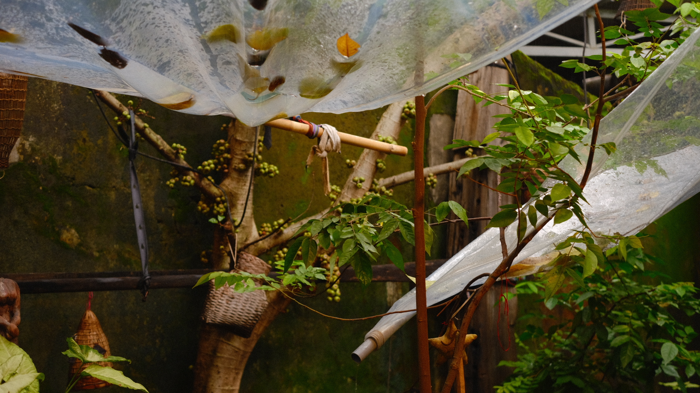
three continents. eight countries.
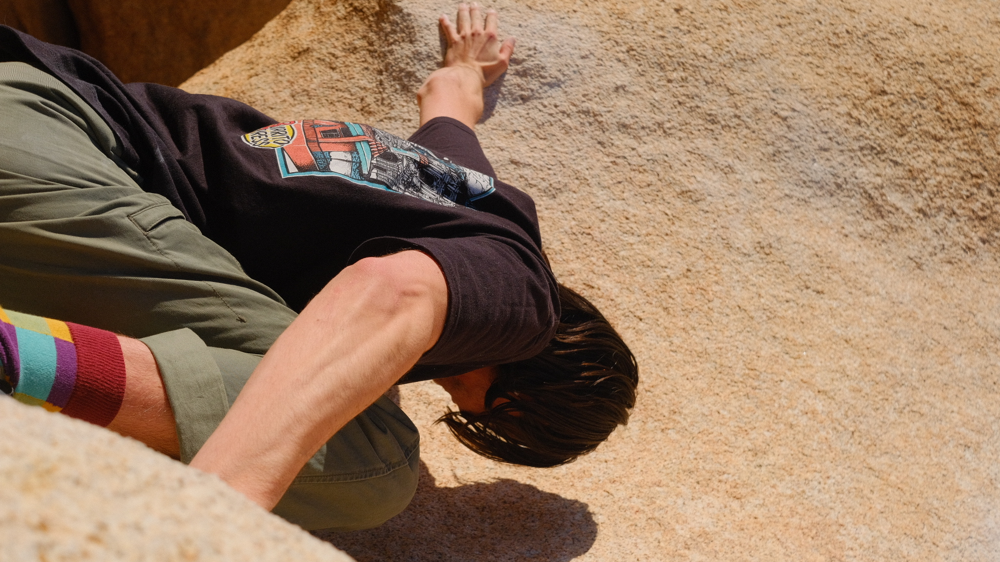
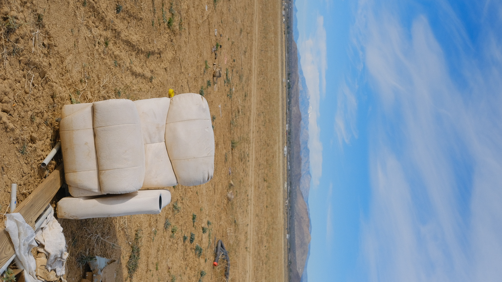
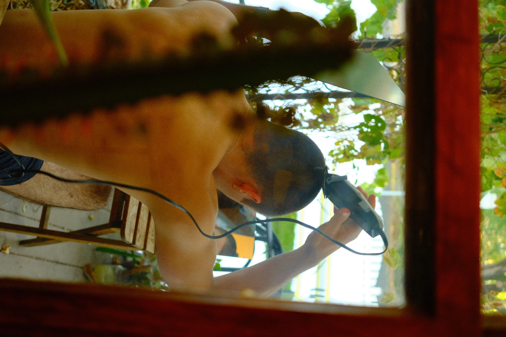
hudson & ari
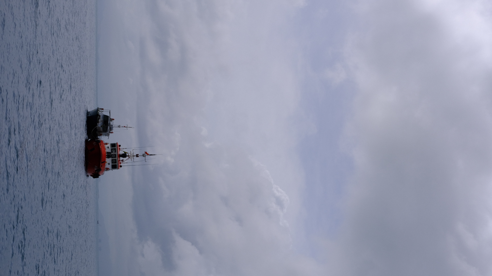
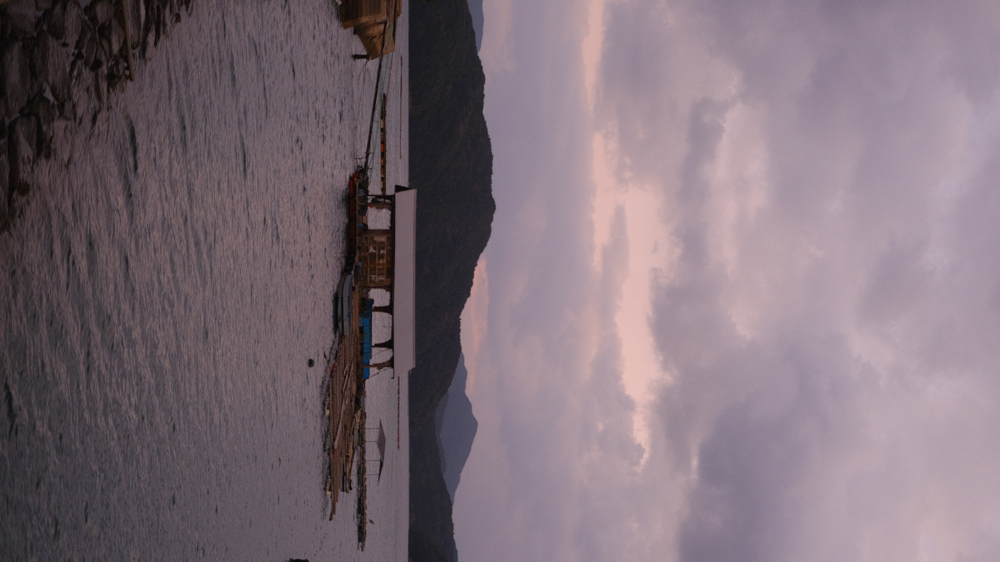
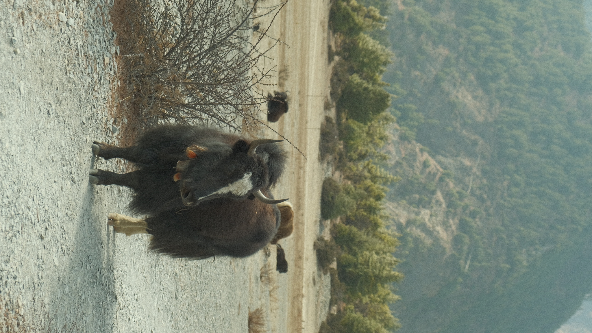
sometimes an 18-55mm lens too
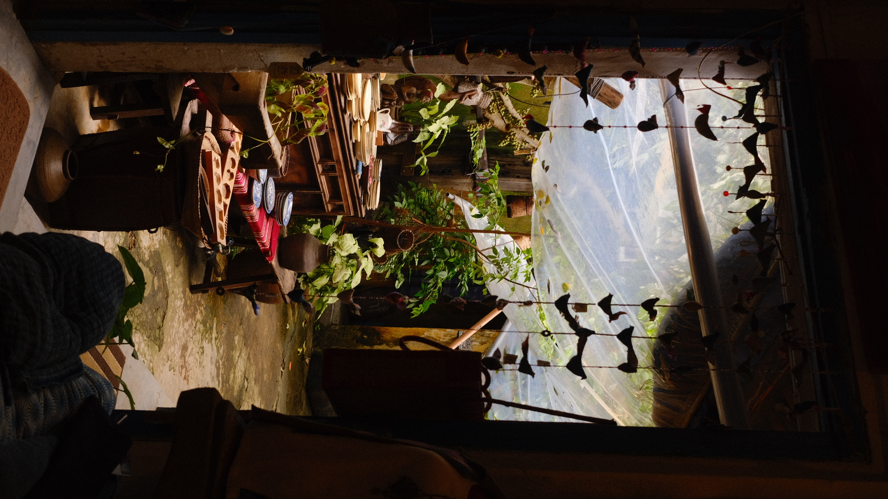
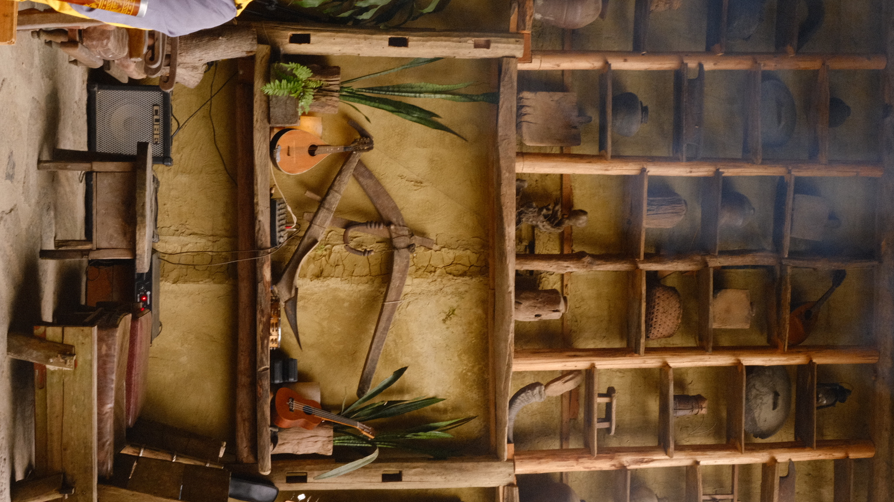
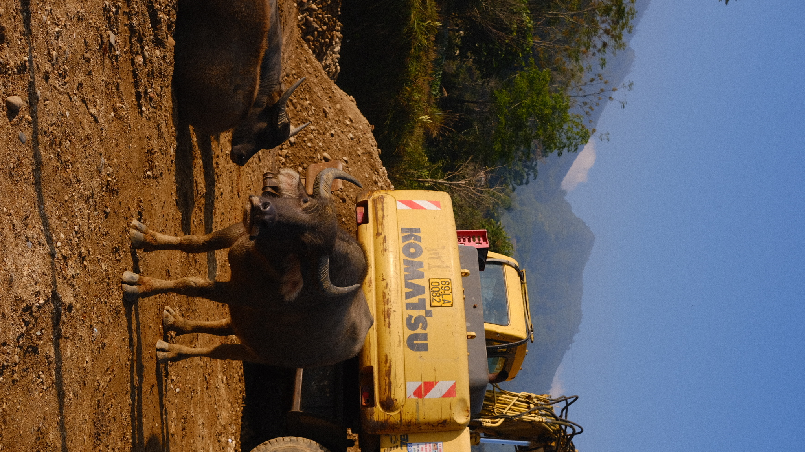
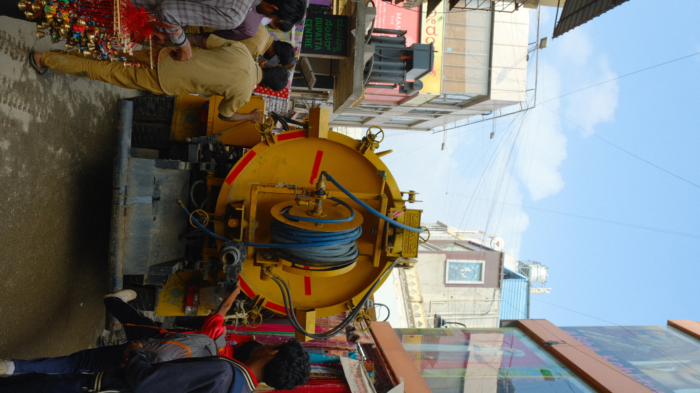
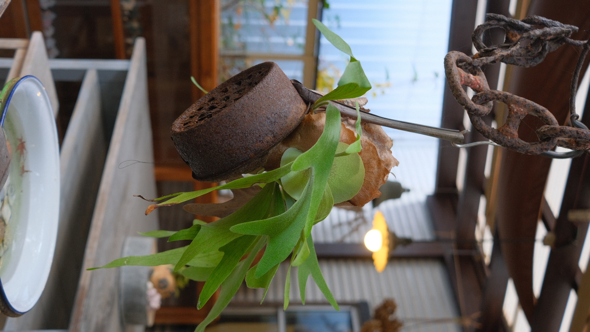
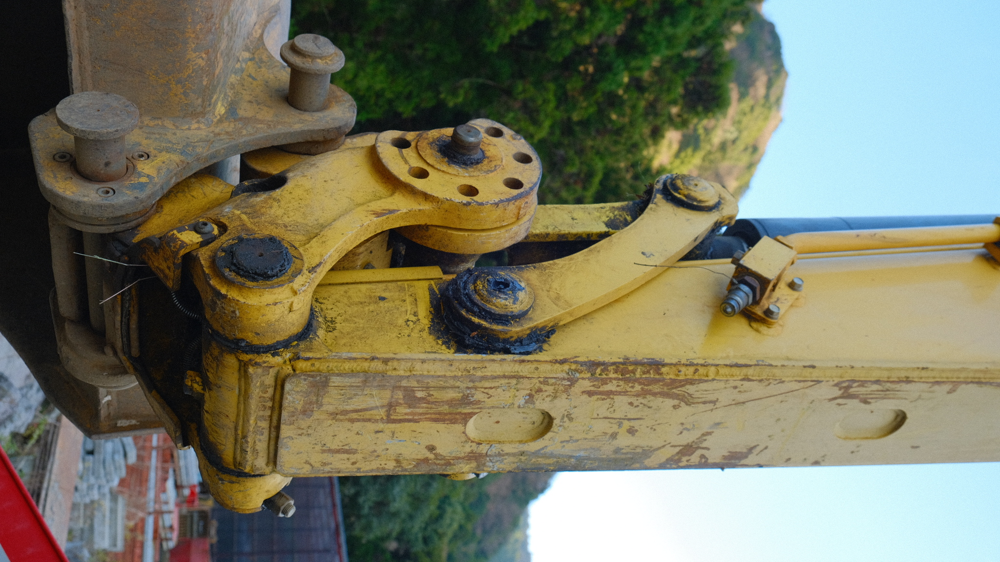
I find places stripped of filters. What is the world like behind the scenes? Who runs this whole operation? What are they feeling, thinking, doing — these machines and people?